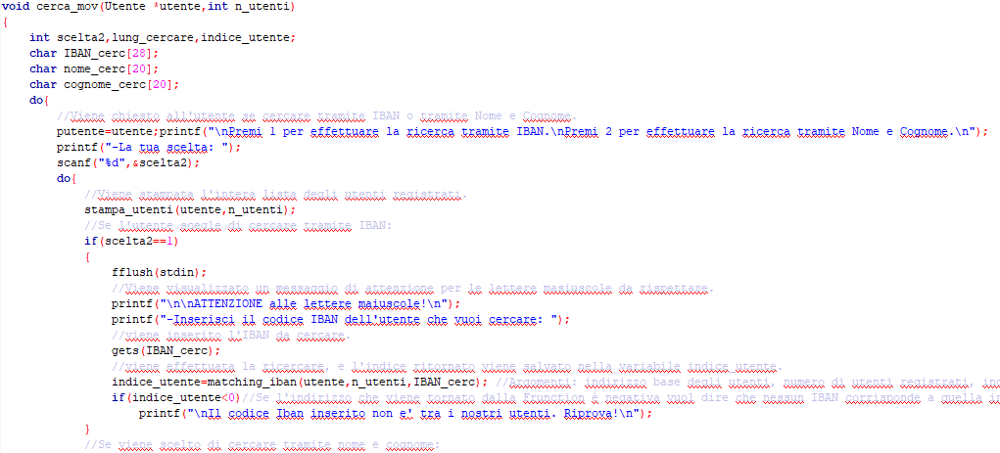

Conto corrente
Come funziona il Programma?
All'inizio del programma viene chiesto all'utente di scegliere se vuole aggiungere un nuovo correntista oppure visualizzare la lista movimenti di un correntista registrato.
L'utente preme 1: viene chiesto di inserire il suo nome, cognome e data di nascita. Gli verrà generato un codice IBAN univoco, e gli verrà chiesto se vuole aggiungere un nuovo correntista o tornare al menù principale.
L'utente preme 2: gli verrà chiesto con quale metodo vuole effettuare la ricerca: se tramite nome e cognome o tramire IBAN. In entrambi i casi gli verrà mostrata la lista completa dei correntisti registrati.
Se l'utente scegliesse di cercare tramite nome e cognome, e sbaglia a digitare un carattere del nome o del cognome gli verrà mostrata la lista movimenti dell'utente il cui nome e cognome è più vicino a quello digitato.
Se l'utente scegliesse invece di cercare tramite IBAN non potrà sbagliare, e dovrà stare attento ai caratteri digitati, comprese le lettere maiuscole. Una volta scelto come effettuare la ricerca verrà mostrata la lista movimenti
dell'utente. Dopo il programma chiede all'utente se vuole tornare al menù principale o effettuare un'altra ricerca.
Per uscire dal programma l'utente dovrà digitare 0 nel menù principale o chiuderlo.
Test effettuati:
All'utente viene mostrato il menù principale in tutti i test effettuati, qui potrà scegliere quale operazione effettuare.
_________________________________________________________________________________________________________________________________________________
•Test 1: inserimento di un nuovo correntista.
Scelta l'opzione di aggiungere un nuovo correntista, viene mostrato all'utente il numero massimo utenti da poter registrare.
Viene chiesto di inserire il nome, il cognome, e la data di nascita (Prima anno, poi mese e infine giorno).
Successivamente viene generato un codice IBAN casuale ma univoco.
Finita l'operazione viene chiesto all'utente di scegliere se ripetere oppure tornare al menù principale.
____________________________________________________________________________________________
•Test 1: ricerca lista movimenti tramite IBAN.
Inserito il numero 2 per ricercare della lista movimenti. Sucessivamente viene inserito 1 per cercare tramite IBAN.
Viene stampata la lista di tutti gli utenti registrati (il codice IBAN e la data di nascita sono generati casualmente all'inizio del programma. Il codice IBAN, inoltre è univoco).
Il numero di utenti di base già registrati è 50.
_________________________________________________________________________________________________________________________________________________
Dopo aver nserito il codice IBAN di uno degli utenti (in questo test quello di "Angela Incremona"), vengono stampati gli ultimi 10 movimenti effettuati dall'utente.
Se si tenta di inserire il codice IBAN con lettere minuscole, o con almeno un carattere differente e se negli utenti registrati non risulta nessun utente con il codice inserito, verrà mostrato errore e viene chiesto di ripetere l'operazione.
L'importo,la data e la tipologia dell'operazione sono casuali. Inoltre la lista è stampata in ordine dalla più recente alla più lontana.
____________________________________________________________________________________________
•Test 2: inserimento di un nuovo correntista.
In questo secondo test si tenta di inserire anno,mese e giorno impossibili. Si nota che il programma mostra un messaggio di errore e chiede di rinserire i dati.
Inoltre si può notare la generazione di un codice IBAN nuovo ed univoco.
____________________________________________________________________________________________
•Test 2: ricerca lista movimenti tramite Nome e Cognome.
In questo test verrà effettuata la ricerca della lista movimenti tramite l'inserimento del nome e del cognome.
Si sceglie come tester l'utente "Antonio Colucci". Prima si digiterà il nome con un carattere errato e poi in modo corretto in modo da vedere
la possibilità di ricercare l'utente più simile a quello digitato.
_________________________________________________________________________________________________________________________________________________
In questa immagine si può notare innanzitutto l'inserimento effettuato con successo dell'utente "Luca Imprudente" (del test dell'inserimento).
Poi viene digitato volontariamente il cognome sbagliato, e viene mostrata la lista movimenti di un utente.
Per essere sicuri che l'utente sia quello giusto nell'immagine successiva viene mostrata la lista movimenti dell'utente inserendo il nome e cognome corretto.
_________________________________________________________________________________________________________________________________________________
Come si può notare la lista corrisponde!
____________________________________________________________________________________________
•Test 3: ricerca lista movimenti del correntista inserito dall'utente.
Si vuole effettuare il test di ricercare la lista movimenti del correntista inserito precedentemente dall'utente.
Ovviamente l'utente appena creato avrà la lista movimenti vuota.
____________________________________________________________________________________________
•Librerie, variabili globali, struct e prototipi delle funzioni:
Le librerie utilizzate dal programma sono le due librerie standard, la libreria time.h per generare numeri casuali e
la libreria string.h utilizzata per alcune operazioni con le stringhe. Vengono definite 3 struct, una per le date, una per la lista movimenti ed una per gli utenti.
Infine viene dichiarare una variabile puntatore globale che "punterà" ad un tipo Utente.
_________________________________________________________________________________________________________________________________________________
L'immagine mostra tutti i prototipi delle procedure e delle function utilizzate da questo programma.
_________________________________________________________________________________________________________________________________________________
•Main:
All'interno del main troviamo l'inizializzazione dei nomi e cognomi gli utenti registrati (i nomi e cognomi sono inseriti manualmente).
Vengono richiamate tre procedure di generazione, quella per l'iban, quella per le date, e quella della lista movimenti.
Successivamente viene richiamata la procedura di ordinamento della lista movimenti. Finite le inizializzazioni troviamo un costrutto do-while,
questo costrutto viene ripetuto fin quando la scelta all'interno corrisponde a 0.
Sempre nel main del programma troviamo il costrutto switch case, che controlla la scelta dell'utente effettuata nel menù principale.
In base alla scelta viene richiamata una procedura differente.
_________________________________________________________________________________________________________________________________________________
•Generatore IBAN:
La procedura genera codici Iban casuali per il numero di utenti passato al momento della chiamata.
E' costituita principalmente da due cicli for, uno per la generazione del codice ed uno per il controllo di unicità.
All'interno del primo ciclo troviamo un secondo ciclo for che va da 1 a 27 (il numero di caratteri presenti in un codice iban),
all'interno di quest'altro ciclo ci sono una serie di controlli del contatore del ciclo per la generazione di diversi numeri casuali o caratteri.

Il secondo ciclo for princripale controlla se il codice iban generato è differente da quelli generati precedentemente.
Utilizzando la libreria strcmp viene effettuato il controllo delle stringe generate e se risulta uguale viene richiamata la procedura di generazione di iban,
ma con un solo utente da rigenerare.
_________________________________________________________________________________________________________________________________________________
•Generatore data:
Questa procedura genera date casuali, sia quelle di nascita sia quelle per la lista movimenti.
Nella procedura troviamo un ciclo for che va da 0 al numero di utenti registrati. Nel ciclo ci sono vari controlli per le date di nascita e
la generazione di numeri casuali: per gli anni dal 1950 al 2018, per i mesi da 1 a 12 e per i mesi da 1 a 31 in base la mese generato precedentemente.
Troviamo anche un secondo ciclo che va da 0 a 10 (il numero di movimenti possibili).
_________________________________________________________________________________________________________________________________________________
•Generatore lista movimenti:
La procedura in questione genera 10 importi e tipologie differenti per la lista movimenti.
Troviamo un ciclo for che va da 0 fino al numero di utenti registrati, un secondo ciclo interno che va da 0 a 10, e un costrutto di selezione if-then-else.
Il costrutto di selezione controlla il numero generato casualmente: se 1 assegna alla tipologia la parola "versamento" e genera un numero casuale.
Se il numero casuale è 2 viene assegnato alla tipologia la parola "Prelievo" e viene generato un numero poi inserito negativamente.
L'algoritmo continua così per altre due tipologie. L'inserimento delle parole all'interno degli array di tipo char delle lista avviene tramite l'utilizzao della libreria "strcpy".
_________________________________________________________________________________________________________________________________________________
•Ordinamento lista movimenti:
La procedura di ordinamento della lista movimenti ordina appunto la lista dall'operazione più vicina alla più lontana.
L'ordinamento avviene per tutti gli utenti registrati. Troviamo 3 cicli for:
il primo che scorre gli utenti registrati, il secondo che scorre il movimento su quale confrontare, il terzo scorre i movimenti con quale confrontare.
All'interno del terzo ciclo for troviamo due confronti, prima quello per la data, poi quello per i mesi.
_________________________________________________________________________________________________________________________________________________
•Inserimento utente:
La Function "inserimento_utente" permette di inserire agli utenti registrati un nuovo utente.
Il massimo di utenti possibili da inserire sono 30. Infatti il primo costrutto di selezione controlla la possibilità di inserimento.
Successivamente viene chiesto all'utente l'inserimento di vari dati come: nome, cognome, data di nascita ecc..
All'inserimento di quest'ultima avvengono una serie di controlli per la validità dei valori inseriti.

In seguito viene richiamata la function per generare un nuovo codice IBAN per il nuovo correntista. Infine ci sarà un secondo menù che chiede all'utente
se desidera inserire un nuovo correntista o tornare al menù principale. La Function ritornerà al main il numero di utenti aggiornato.
_________________________________________________________________________________________________________________________________________________
•Cerca Movimenti:

Invece la procedura "cerca_mov" ricerca tra gli utenti registrati tramite nome e cognome o codice IBAN la lista movimenti dell'utente scelto.
Inizialmente viene stampata la lista completa degli utenti registrati e poi chiesto all'utente con quale metodo di ricerca vuole proseguire.
Se la scelta è 1 si cercarà tramite IBAN altrimenti tramite nome e cognome.
Se inserito 1: viene chietro l'inserimento del codice IBAN da cercare, e successivamente avviata la function di matching dell'iban (verrà approfondita successivamente.
Se non risulta nessun utente con il codice iban inserito verrà mostrato un messaggio a tal proposito.
Se inserito 2 invece viene chiesto all'utente di inserire i nome e cognome del correntista da cercare.
Dopo verrà richiamata la function di matching del nominativo. Trovato l'utente cercato verrà mostrata a video la lista movimenti del correntista tramite la procedura "stampa_list_mov"
Infine verrà chiesto all'utente se effettuare nuovamente una ricerca o tornare al menù principale.
_________________________________________________________________________________________________________________________________________________
•Matching iban:
Questa function controlla se negli utenti registrati corrisponde l'iban passato al momento della chiamata.
Viene inizializzato una viariabile indice a -1, e subito dopo troviamo un ciclo for che scorre tutti gli utenti registrati.
Con l'utilizzo della libreria "strcmp" viene controllata l'ugualianza delle due stringhe, cioè i due codici iban, se le due stringhe corrispondono la variabile indice assume il calore del contatore,
che corrisponde all'indice dell'utente con il codice trovato.Infine viene ritornato il valore dell'indice, se l'indice sarà negativo sarà negativo allora non avrà trovato nessun utente con quel codice.
_________________________________________________________________________________________________________________________________________________
•Matching utente:
La function in questione è molto simile allo "string matching",ed è utilizzata per controllare il nome e cognome inserito se risulta nella lista degli utenti registrati.
Vengono dichiarate variabili per i punteggi e una per l'indice. Un ciclo for scorre tutti gli utenti.
Viene calcolata la lunghezza del nome dell'i-simo utente tramite l'utilizzo della libreria "strlen" e se la j-sima lettera del nome dell'i-simo utente
corrisponde alla j-sima lettera del nome passato alla chiamata della function viene incrementato il punteggio. Lo stesso procedimento viene effettuato per il cognome,
e se il punteggio è maggiore del massimo punteggio effettuato allora il punteggio massimo assume il nuovo valore,
e viene memorizzato l'indice con il punteggio più alto. Infine viene ritornato il valore dell'indice con il valore maggiore.
_________________________________________________________________________________________________________________________________________________
•Stampa utenti:

La procedura stampa l'intera lista di utenti registrati, con il loro codice iban,data di nascita e nome e cognome.
All'interno di questa function vengono richiamate anche la procedura "stampa_data" (con la variabile "val" assumerà 0,
in modo da indicare che deve stampare le date di nascita).
_________________________________________________________________________________________________________________________________________________
•Stampa lista movimenti:
La procedura stampa gli ultimi 10 movimenti effettuati dall'utente. Alla chiamata viene passato l'indirizzo dell'utente ricercato in precedenza.
Al suo interno troviamo anche la chiamata alla procedura "stampa_data" (la variabile "val" assumerà 1 per indicare che deve stampare le date delle liste movimenti,
mentre la variabile "indice" assumerà il valore del contatore che scorre la lista per stampare la i-sima data del i-simo movimento.
_________________________________________________________________________________________________________________________________________________
•Stampa data:
Questa procedura stampa a video le date di nascita o le date della lista movimenti, in base al valore che assume la variabile "val":
Se assume valore 0 stampa le date di nascita, altrimenti stampa le date della lista movimenti.
Tocca il Logo per tornare su!
____________________________________________________________________________________________